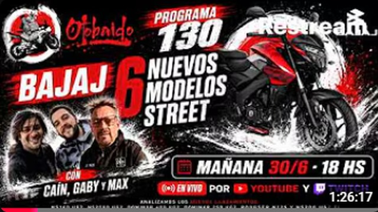
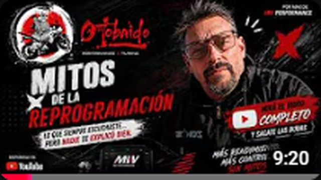
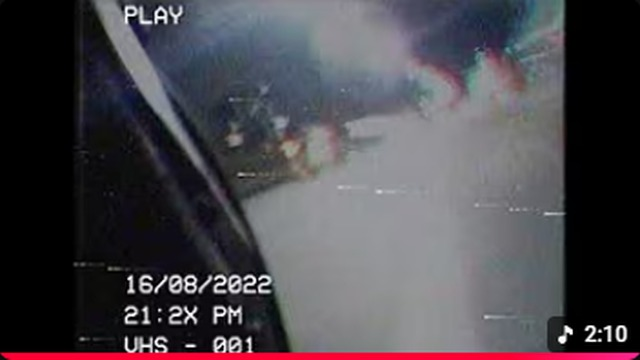

¿Qué es Otobaido?

ULTIMOS PROGRAMAS
✿
ULTIMO VIVO 1:26:17
Vivos pasados
Cap. 130 - Corven Bajaj 6 Unidades y otras cositas!
El último vivo del canal, directo al dojo de la ruta.

ULTIMO VIDEO 9:20
Videos
Max Willberger - Mitos de la Reprogramación
Contenido publicado del canal con sello Otobaido.

Ninjita 2:10
Playlist
Ninjita 🏍 - VHS 001 - 21:2X
Una cápsula ninja del canal, con ruido VHS y motor de fondo.